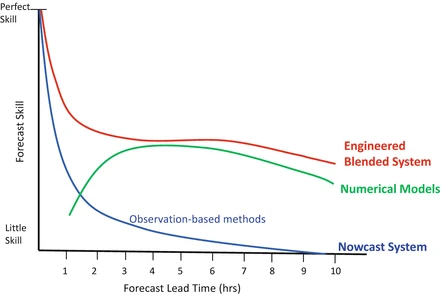
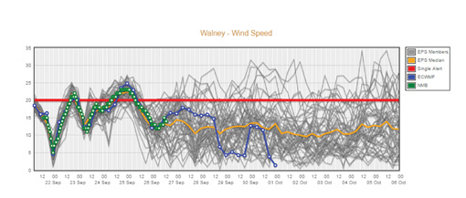
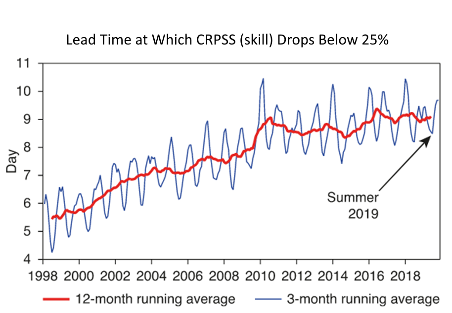

This forecasting will last 1-2 days. The weather has an immense influence on human daily patterns, the production of food, and personal comfort zones. Forecasting plays an important role in planning current and future activities. So, there are other aspects that may have a huge impact on the forecasting outcome. However, accurate forecasting is very crucial. Forecasting is an important tool for various analyses. ECMWF is the most precise global model. ECMWF performs way better than the GFS.
This kind of forecasting lasts 3-4 days to 2 weeks. Medium-term forecasts are made for small strategic resolutions in correlation with the nature of the business. They are very important in the area of business budgeting and development and it is from this forecast that company budgets are decided. inaccurate forecasting can have serious impacts on the rest of the organization, the organization will be forced to be with the unsold stock and will have to overspend on production again. A huge amount of money has to be paid to banks and creditors, and stock may have to be sold at a very less price. Organizations can go bankrupt due to insufficient attention on medium-term sales forecasting. The time period for a medium-term forecast is usually one year.
This forecasting is for times longer than four weeks. Long-term forecasts are for mainly major upcoming strategic decisions to be taken within an organization and for the organization, They focus very much on how to use resources in an optimum manner. They deal with basic items rather than specific items. And therefore, organizations are concerned more with general ongoing trends, following these trends, regular attempts to predict revenue-generating sales over periods greater than two years. In some strategies, For huge industries, accurate predictions might be needed for a decade or more to tackle the changes. The disadvantage of such forecasts is that they cannot be more than unclear. Prediction planners blame the forecast when things go wrong totally opposite what was predicted and forecasting hence receives criticism from all who are impacted.
